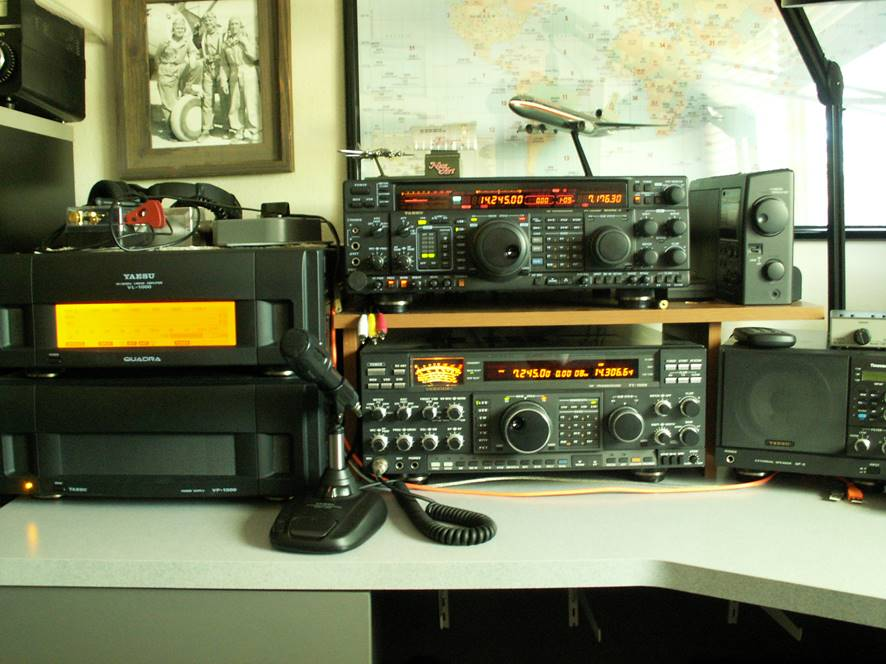

Hi Paul, Good seeing you at our Monday Carl’s Jr. lunch. I have both the FT-1000D and the FT-1000MP Mark-V – both 200 watt radios and separate receivers. The Mark-V is the better radio. More features and newer technology than the venerable FT-1000D. I haven’t the heart to let the “D” go so both are here connected to the Quadra. (see picture below) Of the two radios, I use the Mark-V by far the most. Each has easy split set up but the Mark-V has the mute function for both receivers and toggle FAST button. I like the Mark-V so much I have over the years invested in adding all the optional filters, key-click mod (Yaesu is notorious for) LED back light for the display getting rid of the CCFL and its inverter. Lots of support out there for the Mark-V. http://www.hamradiobug.com/index.html  73, Bob – W6OPO From: Chat [mailto:chat-bounces@ncdxc.org] On Behalf Of Paul Booth via Chat Hi all. As I retire and start looking at what to thin out I’m looking for advice. I have fairly up to date gear that I use as a main station but some of the older stuff I’m really fond of and don’t want to get rid of it all. My first dilemma is I have both a Yaesu FT-1000D and a Yaesu FT-1000MP Mark V. I need (want) to keep just one. Which one should I keep? Also anyone looking for any Collins pieces? I’m going to thin that out too. Thanks. 73s, Paul, W6IBU |